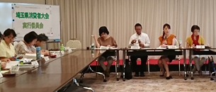

|
|
8月22日（水）14時30分より、市民会館うらわ101号会議室にて、第54回埼玉県消費者大会第5回実行委員会を開催、19団体25人と事務局3人が出席しました。 【議題】  1．事務局長から 2．第4回実行委員会報告 3．「埼玉県への要請」項目について論議 消費者課題・食・社会保障・平和・くらし全般の5つのテーマで、42の要請事項をあげ、内容について検討。 4．大会アピール（案）について論議 5．大会当日に向けた確認事項 ●参加人数、登壇者について ●お弁当注文について ●実行委員の当日の集合時間、書籍の販売提案、団体紹介の集約状況など 6．各団体の分科会担当確認、分科会の内容について 食の分科会、消費者問題分科会、社会保障分科会、環境分科会の分科会にわかれ、内容、当日のすすめ方、役割分担について話し合った 7．実行委員会団体へのお知らせ 埼玉消費者被害をなくす会学習会について □次回日程 9月19日（水）13：30～ 市民会館うらわ7F会議室 |